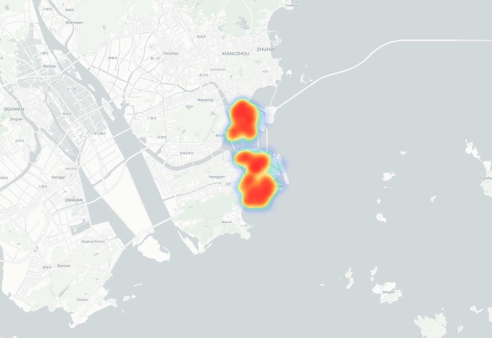
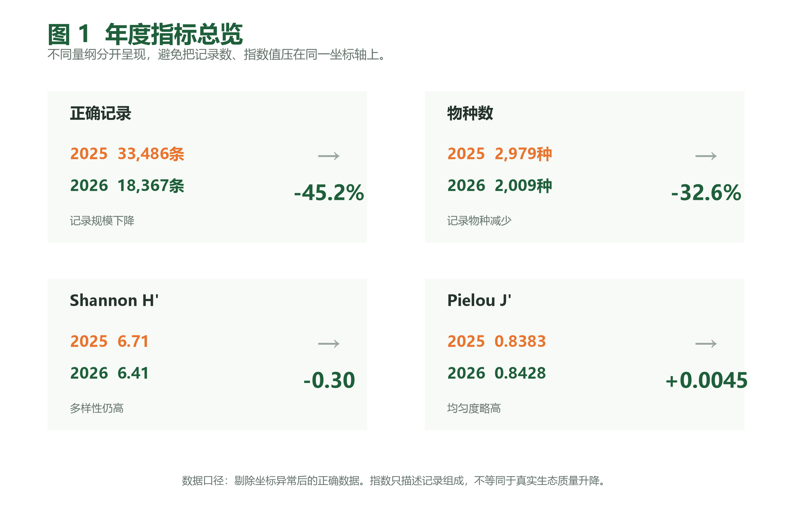
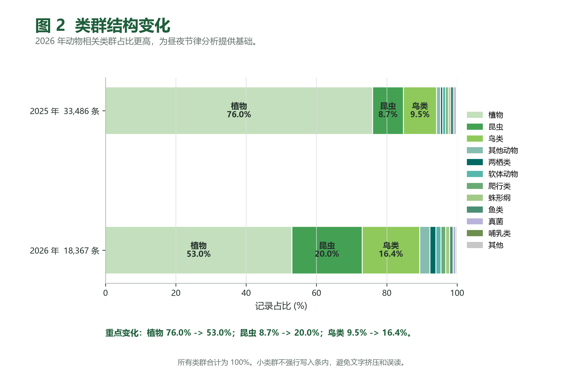
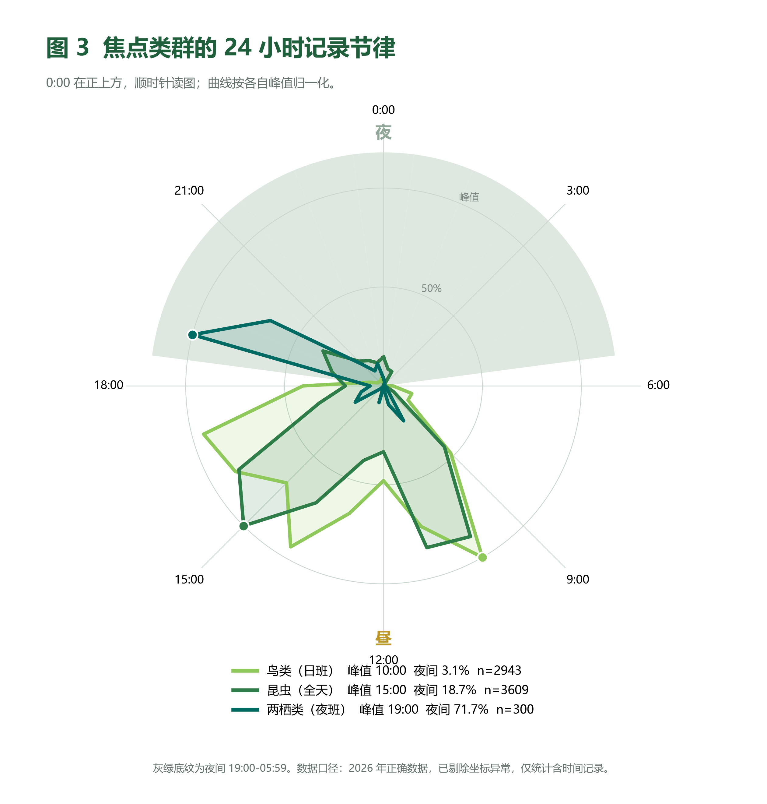
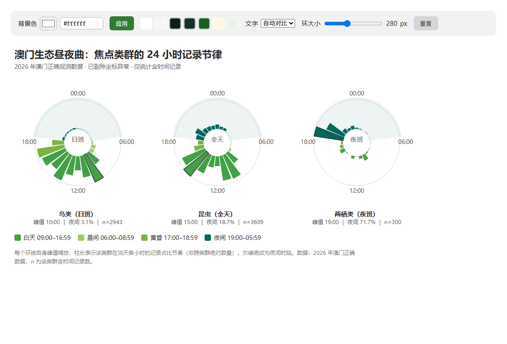
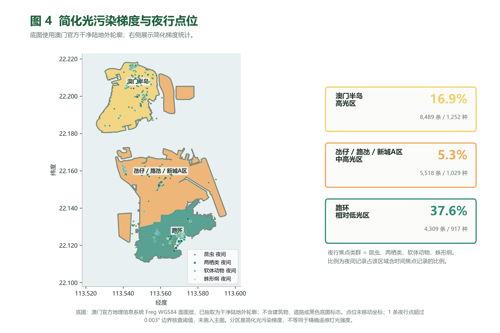
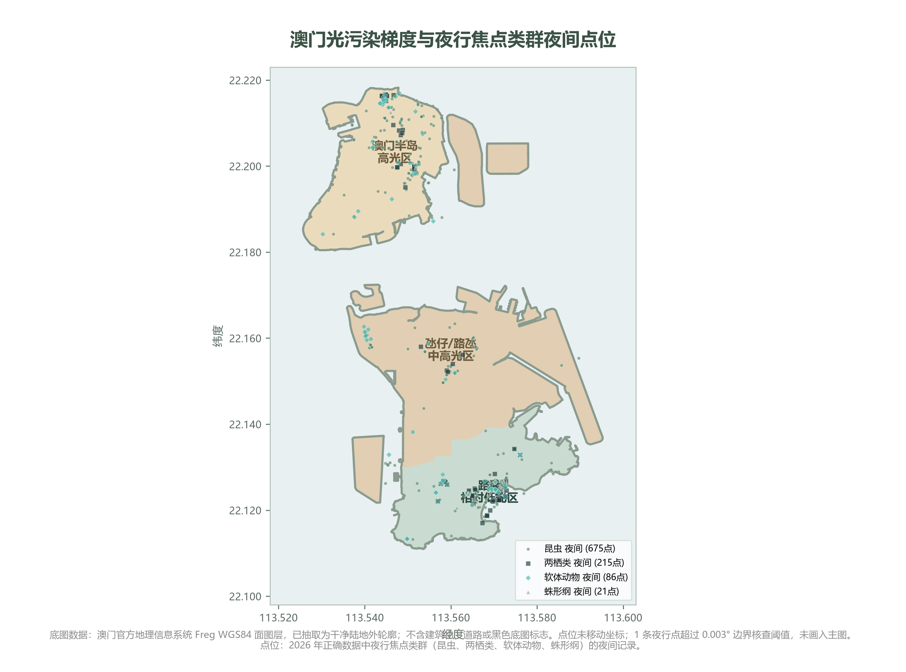
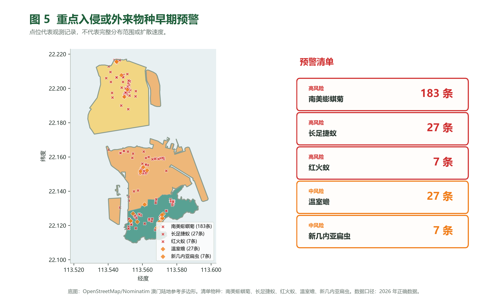
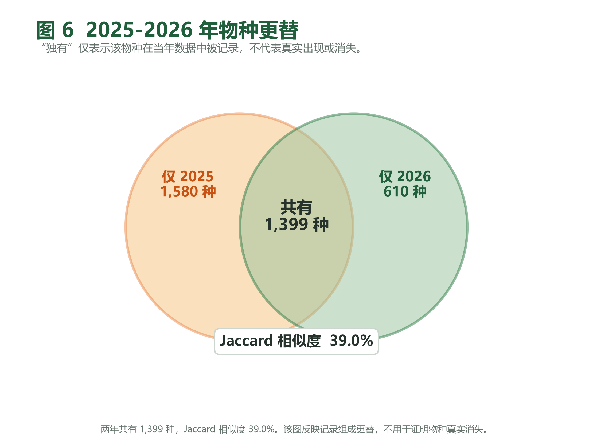

澳门生态昼夜曲
谁还按自己的生物钟生活？
光污染的扩散程度正以每年约 10% 的速度从地表扩散，是全球变化中最快却最被忽视的维度之一。 澳门作为世界人口密度最高的 24 小时运转的"不夜城"，其独特的光环境对本地生物多样性构成何种压力，此前缺乏系统性评估。 本研究基于 2025—2026 年澳门 51,853 条公民科学记录， 首次将公民科学数据与光污染梯度相结合，揭示城市灯光下的生态昼夜节律。
研究主线
全研究以"时钟"为叙事骨架，把 24 小时的城市生态切成 6 段。 从午夜的霓虹 → 清晨的鸟鸣 → 上午 10 点的合唱 → 午后昆虫 → 黄昏交接 → 重回深夜， 我们试图回答：在越来越亮的澳门，谁还按自己的生物钟生活？
两年数据
2025: 33,486 条
2026: 18,367 条
坐标清洗
剔除 155 条异常
圈养 / 野生分离
昼夜分箱
夜间 / 晨间
白天 / 黄昏
梯度比较
半岛 / 氹仔 / 路环
三层光污染梯度
保护建议
暗夜照明
路环示范区
研究背景 ｜ 不夜城里的生态压力
从全球光污染的快速扩散，到澳门 32.9 km² 的高密度城市光环境，本研究的起点。
人造光正以每年约 10% 的速度从地表扩散（Scientific American, 2023）， 是全球变化中最快却最被忽视的维度之一。澳门作为世界人口密度最高、博彩业 24 小时运转的"不夜城"， 其独特的光环境对本地生物多样性构成何种压力，此前缺乏系统性评估。
来自 Science 的证据
研究显示，城市夜间人造光（ALAN）可延长日行性鸟类发声活动平均 50 分钟（Pease & Gilbert, 2025, Science 389:818–821）， 并干扰昆虫飞行定向、求偶与捕食行为（Owens & Lewis, 2018; Fabian et al., 2024）。 生态光污染奠基性综述（Longcore & Rich, 2004）指出，ALAN 不仅是"看得见的光"， 更是一种改变物种节律、繁殖、迁徙与捕食关系的环境压力源。
澳门：32.9 km² 的生物多样性热点
澳门陆地面积仅 32.9 平方公里，却是货真价实的生物多样性热点。 2025 年我们记录了 2,979 个物种、33,486 条观测； 2026 年为 2,009 个物种、18,367 条观测。 两组数据的香农 - 维纳指数（Shannon H'）分别达到 6.71 和 6.41 —— 在城市生态学中，H' 超过 6 已属极高水平的物种多样性。
辛普森多样性指数（Simpson 1-D）两年均超过 0.995， 意味着随机抽取两条记录，它们属于不同物种的概率接近 100%—— 没有单一物种形成绝对垄断。Pielou 均匀度指数两年均高于 0.84， 说明记录在物种间的分布相当均匀。

研究方法
本研究使用 2025—2026 年澳门生物多样性公民科学数据，经坐标清洗后获得 51,853 条有效记录（2025 年 33,486 条；2026 年 18,367 条， 涵盖 2,979 种和 2,009 种）。将有时间标记的记录按昼夜四段分箱 （夜间 / 晨间 / 白天 / 黄昏），并按简化光污染梯度 （高光 / 中高光 / 相对低光）进行空间比较。
研究意义
本研究为澳门首次将公民科学数据与光污染梯度相结合的生态昼夜节律分析， 建议推广暗夜友好照明、建立路环暗夜生态示范区，并加强入侵物种年度监测。
数据分析 ｜ 从 51,853 条记录到一首昼夜曲
两年数据对比、类群结构变化、24 小时昼夜节律环、光污染梯度空间比较。
① 数据基础 · 两年观测的纵向对比
经坐标清洗剔除 155 条异常记录后，获得 51,853 条有效记录。 两年总记录数下降 45%，但动物界记录反而增加 8.8%—— 植物占比从 76.0% 降至 53.0%，而昆虫占比从 8.7% 升至 20.0%，鸟类从 9.5% 升至 16.4%。 两年的 Jaccard 物种相似度仅为 39.0%，观测到的物种组成差异明显。


这意味着 2026 年数据不是简单"变少了"——是动物的声音更清楚了。 鸟类以白天活动为主（96.9%），上午 10 点达到全年最高峰 378 条； 昆虫白天在下午 3 点达到 487 条高峰，但夜间仍有 18.7% 的记录活跃着。
② 类群多样性指数（2026 年）
| 分类群 | 记录数 | 物种数 | Shannon H' | Simpson 1-D | Pielou J' |
|---|---|---|---|---|---|
| 植物 | 9,736 | 1,074 | 5.9835 | 0.9949 | 0.8573 |
| 昆虫 | 3,673 | 574 | 5.4723 | 0.9923 | 0.8614 |
| 鸟类 | 3,007 | 95 | 3.0875 | 0.9234 | 0.6780 |
| 真菌 | 152 | 63 | 3.6594 | 0.9621 | 0.8832 |
| 蛛形纲 | 212 | 58 | 3.3136 | 0.9349 | 0.8161 |
| 鱼类 | 177 | 38 | 2.7101 | 0.8820 | 0.7450 |
| 软体动物 | 273 | 28 | 2.2548 | 0.8380 | 0.6767 |
| 爬行 | 239 | 20 | 2.0944 | 0.8320 | 0.6991 |
| 哺乳 | 54 | 10 | 1.7124 | 0.7470 | 0.7437 |
| 两栖 | 303 | 7 | 1.4224 | 0.6985 | 0.7310 |
数据来源：报告文档 / 生物多样性指数分析报告.md
③ 24 小时昼夜节律环
将所有有时间标记的记录按 24 小时分箱后，澳门城市生态呈现一条清晰的"昼夜曲"： 清晨 6 点鸟类率先发声（18 条），到 10 点达到全年最高峰 378 条； 昆虫午后 15 点达到 487 条高峰； 两栖类在 19 点之后接管夜晚 —— 夜间活动比例 71.7%； 凌晨 4 点形成全城"生态真空"——零记录的一小时。


| 类群 | 有时间记录 | 夜间记录 | 夜间比例 | 活动高峰小时 |
|---|---|---|---|---|
| 昆虫 | 3,609 | 676 | 18.7% | 15:00 |
| 两栖类 | 300 | 215 | 71.7% | 19:00 |
| 软体动物 | 268 | 86 | 32.1% | 21:00 |
| 蛛形纲 | 209 | 21 | 10.0% | 15:00 |
④ 光污染梯度空间分析
澳门的光环境与它的生物多样性一样，存在显著的空间差异。 我们将 2026 年的有效记录按简化光污染梯度分为三层—— 高光区（半岛）、中高光区（氹仔·路氹城）和 相对低光区（路环）， 将夜行焦点类群（昆虫、两栖类、软体动物、蛛形纲）和鸟类的昼夜活动模式进行了跨区比较。


| 指标 | 半岛（高光） | 氹仔路氹城（中高光） | 路环（低光） | 路环/半岛 |
|---|---|---|---|---|
| 记录总数 | 8,489 | 5,518 | 4,309 | — |
| 夜行焦点夜间比例 | 16.9% | 5.3% | 37.6% | 2.2 × |
| 鸟类夜间比例 | 3.0% | 2.0% | 6.2% | 2.1 × |
| 昆虫夜间比例 | 13.8% | 4.8% | 31.0% | 2.2 × |
| 两栖类记录 | 55 条 | 44 条 | 204 条 | 3.7 × |
核心发现 ｜ 时钟里的四个故事
深夜的 90 条异常 · 清晨的渐强序曲 · 上午的合唱高峰 · 暗夜避难所与入侵预警。
🌙 90 条夜间鸟类记录——它们本该在睡觉
凌晨零点到五点，我们在澳门记录到 186 条生命活动。 昆虫占了 84%——丽叩甲、东方水蠊、美洲大蠊，在黑暗的角落里爬行。 两栖类 7 条——黑眶蟾蜍在湿地边缘低鸣。 凌晨四点。全城静默。那个小时，没有任何生命被记录—— 澳门一天里唯一的"生态真空"。
然后，数据里出现了一个让人不安的信号： 90 条夜间鸟类记录。鹊鸲 14 次，白头鹎 8 次，麻雀 7 次，珠颈斑鸠 6 次，红耳鹎 5 次。 这些不是猫头鹰，不是夜鹰——它们全是白天活动的鸟。 但它们在夜里被看到了。在午夜。在凌晨。在路灯下。 有一个解释，就挂在澳门每一条街上：灯光。
🌅 06:00—09:00 ｜ 鸟的独奏时间
06:00，18 条鸟类记录。珠颈斑鸠在 06:10 发出第一声咕咕。鹊鸲在 06:18 开始清唱。 红耳鹎在 06:28 加入，小白腰雨燕在 06:20 掠过天空。 07:00 升到 56 条——翻了三倍。08:00 是 54 条。 三个小时，128 条鸟类记录。而昆虫只有 41 条——还在等太阳；两栖类 3 条——夜班刚下班。
| 类群 | 晨间记录 (06–08) | 状态 | 一句话 |
|---|---|---|---|
| 🐦 鸟类 | 128 条 | 渐强中 | "天亮了，开工。" |
| 🦗 昆虫 | 41 条 | 等待中 | "等太阳再高一点。" |
| 🐸 两栖类 | 3 条 | 下班了 | "夜班结束，找地方躲。" |
☀️ 10:00 ｜ 全年最高峰 · 378 条鸟类
九点。182 条鸟类记录。比八点翻了超过三倍。 十点。378 条——全年最高峰，是清晨六点的 21 倍。 珠颈斑鸠在广场上踱步，麻雀在屋檐下吵闹，红耳鹎站在最高的枝头， 鹊鸲在灌木丛里唱着重复的旋律，白头鹎在榕树上跳来跳去，八哥在电线上排成一排。 这一小时，鸟+昆虫合计 806 条生命记录——一天里最"吵"的时刻。
上午三小时，838 条鸟类记录——占全天的 27.9%。 这座城市最活跃的居民，不是人类。
10:00 鸟类六巨头（2026 总记录）
这些鸟没有一只是"稀有"的。正因如此，它们才是城市生态最诚实的指针—— 如果连它们都少了，那才是真正的警报。
🏝️ 路环 ｜ 37.6% vs 16.9% · 暗夜生命的最后据点
梯度数据说话：夜行焦点类群在路环相对低光区的夜间活动比例为 37.6%， 是半岛高光区 16.9% 的 2.2 倍。 若拆分到具体类群——鸟类夜间比例路环 6.2% vs 半岛 3.0%； 昆虫路环 31.0% vs 半岛 13.8%，差距同样 2.2 倍。 两栖类的空间集中更为极端：2026 年共记录 303 条两栖类数据， 其中 204 条集中在路环，半岛仅 55 条，两栖类整体夜间活动比例高达 71.7%。
🚨 5 种重点入侵物种的早期预警点位
入侵物种不分昼夜扩散，不受光周期约束——这是它们和本地生物竞争中的"灯光红利"。 本研究识别 5 种重点入侵物种，已构建早期预警点位图。
| 物种 | 类型 | 记录数 | 主要区域 | 关注 |
|---|---|---|---|---|
| 南美蟛蜞菊 | 入侵植物 | 183 | 澳门半岛 | 高 |
| 长足捷蚁 | 入侵昆虫 | 27 | 路环 | 高 |
| 红火蚁 | 入侵昆虫 | 7 | 澳门半岛 | 高 |
| 温室蟾 | 外来两栖类 | 27 | 路环 | 中 |
| 新几内亚扁虫 | 入侵扁形动物 | 7 | 澳门半岛 | 中 |

📊 两年 Jaccard 相似度仅 39.0%
2025 与 2026 两年共有物种 1,399 种，Jaccard 物种相似度仅 39.0%， 意味着两年物种组成差异明显。其原因可能来自三个方向： 采样强度变化、观测者关注类群转移、真实生态压力。
其中 720 个物种仅出现 1 次（singletons），322 个出现 2 次（doubletons）， 71.0% 的物种总出现次数 ≤5。两栖类中 台北蛙仅 1 条记录、 鸟类中 黑脸琵鹭仅 1 条——这些"独有物种"提示后续需要重点复查。

未来展望 ｜ 给夜晚留一盏不亮的灯
四项可执行的保护行动 · 数据局限 · 研究展望。
💡 给夜晚留一盏不亮的灯。保护澳门生物钟，从保护黑暗开始。
🌃 暗夜友好照明
- 公园和湿地周边使用暖色温 LED（≤3000K）
- 路灯加装遮光罩，减少向上散射
- 深夜（00:00-05:00）调暗非必要照明
- 参考国际暗天协会（IDA）暗夜友好标准
参考 · IDA: darksky.org / Pease & Gilbert (2025, Science)
🏝️ 路环暗夜复查
- 在路环建立标准化夜间调查样线
- 监测两栖类、夜行昆虫的种群变化
- 评估路环山体的天然"暗影"屏障效应
- 将路环定位为澳门"暗夜生态示范区"
参考 · CMS Resolution 13.5 光污染决议 / IDA Dark Sky Park 认证
🚨 入侵物种早期预警
- 建立重点入侵物种年度监测清单
- 优先清除半岛和氹仔的南美蟛蜞菊种群
- 路环作为"入侵防火墙"进行口岸监测
- 开放公民科学上传通道，鼓励发现-上报
参考 · IUCN 全球入侵物种数据库 (GISD)
📋 低频物种复核清单
- 对仅出现 1-2 次的动物类群物种进行复查
- 关注夜间记录中的稀有夜行物种
- 区分"数据低频"和"真实稀少"
- 黑脸琵鹭、台北蛙等单条记录列入年度复查
参考 · 报告文档 / 稀有物种分析报告.md
数据局限与边界声明
数据→解释→行动 闭环
| 数据发现 | → 科学解释 | → 保护行动 |
|---|---|---|
| 90 条夜间鸟类记录 | 光污染延长鸟类活动（Science 2025） | 暗夜友好照明方案 |
| 路环 37.6% vs 半岛 16.9% | 路环是最后的暗夜避难所 | 路环暗夜生态示范区 |
| 5 种入侵物种 ≥250 条记录 | 不受光周期约束的扩散 | 早期预警年度监测 |
| 720 个 singletons 物种 | 低频信号需要重复观测确认 | 低频物种复核清单 |
保护黑暗，就是保护那些
按自己生物钟生活的生命的最后权利。"